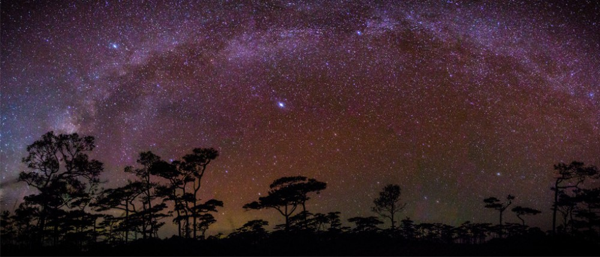
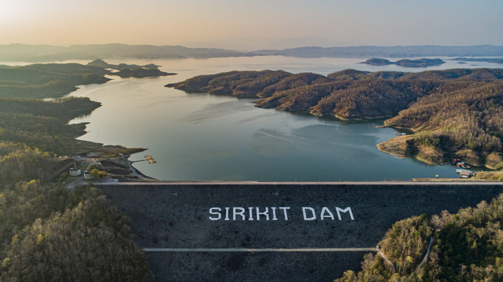
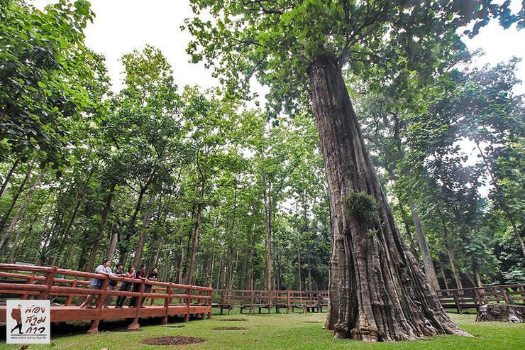

แหล่งท่องเที่ยวทางธรรมชาติที่งดงาม โดยเฉพาะทุ่งดอกหงอนนาคในช่วงฤดูฝน และลานสนสามใบ
 ^ กลับด้านบนเขื่อนดินที่ใหญ่ที่สุดในประเทศไทย เป็นสถานที่พักผ่อนหย่อนใจ ล่องแพ และชมทิวทัศน์เหนือสันเขื่อน
 ^ กลับด้านบนเป็นที่ตั้งของต้นสักที่มีอายุเก่าแก่ที่สุดในโลกต้นหนึ่ง มีขนาดใหญ่และสวยงาม
 ^ กลับด้านบน